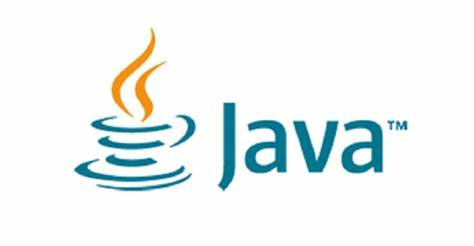
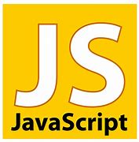
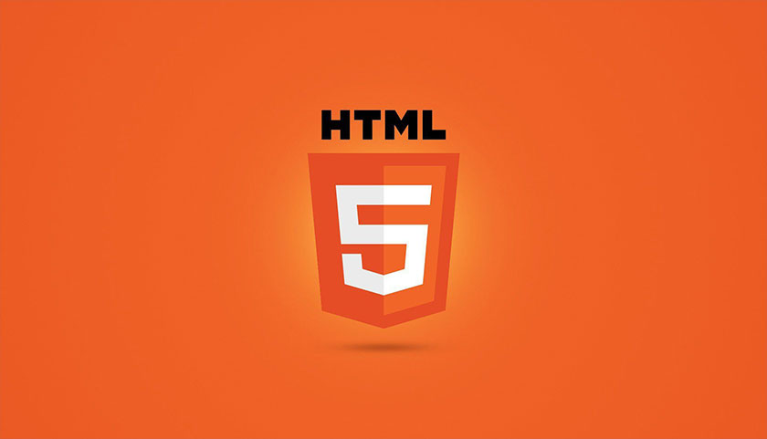
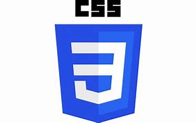

La programación es el proceso de crear un conjunto de instrucciones que le dicen a una computadora como realizar algún tipo de tarea. Pero no solo la acción de escribir un código para que la computadora o el software lo ejecute. Incluye, además, todas las tareas necesarias para que el código funcione correctamente y cumpla el objetivo para el cual se escribió. En la actualidad, la noción de programación se encuentra muy asociada a la creación de aplicaciones de informática y videojuegos. En este sentido, es el proceso por el cual una persona desarrolla un programa, valiéndose de una herramienta que le permita escribir el código (el cual puede estar en uno o varios lenguajes, como C++, Java y Python, entre muchos otros) y de otra que sea capaz de “traducirlo” a lo que se conoce como lenguaje de máquina, que puede "comprender" el microprocesador.
>Python
Python es un lenguaje de programación desarrollado como proyecto de código abierto y es administrado por la empresa Python software Foundation. Fue creado por Guido van Rossum y su nombre se debe a la afición de su creador a los humoristas británicos Monty Python. Se trata de un lenguaje de programación en scripts, competencia directa de Perl. Python permite dividir el programa en módulos reutilizables desde otros programas Python. También viene con una gran colección de módulos estándar que proporcionan E/S de ficheros, llamadas al sistema, sockets, interfaces GUI, etc. Se trata de un lenguaje interpretado, lo que permite ahorrar el proceso de compilado.
Java
Java es un lenguaje de programación que fue desarrollado por la compañía “Sun Microsystems” que fue luego comprada por otra compañía llamada Oracle. El propósito de java fue el de crear un lenguaje con el que el internauta pudiese interactuar en internet y que además lo pudiese hacer, teniendo cualquier sistema operativo instalado. Sea Windows en cualquiera de sus versiones modernas, Mac, Linux, etc.
JavaScript
JavaScript es el nombre de un lenguaje de programación : es decir, un lenguaje formal que da instrucciones a una computadora (computadora) para generar ciertos datos.Todo para producir recursos interactivos en una página web. Debido a sus características, JavaScript es un imperativo, basado en prototipos y objetos de lenguaje .Normalmente se utiliza en el lado del cliente (lo que se conoce como lado del cliente ), aunque también hay una forma de este lenguaje en el lado del servidor ( servidor-side ). Cuando hablamos de lenguajes de programación imperativos nos referimos a aquellos cuyas instrucciones deben ejecutarse una tras otra, es decir, de forma secuencial.Es importante aclarar que la única excepción se da en los bucles, ya que la ejecución de todas las instrucciones allí presentes debe repetirse hasta que se cumpla una determinada condición. Como se mencionó anteriormente, JavaScript también es un lenguaje orientado a objetos , y esto significa que cumple con el paradigma que te permite crear clases y luego instanciarlas en forma de objetos tantas veces como sea necesario, cada objeto tiene sus propiedades y métodos, y también puede heredar características de otras clases, entre otras posibilidades. Para entender este concepto podemos pensar en objetos del mundo real: podríamos definir la clase «silla», indicando que tiene respaldo, cuatro patas y asiento, y luego crear tantas sillas como necesitemos, sin tener para redefinir sus características.A su vez, esta clase podría heredar de un denominado 'mobiliario', donde las propiedades serían comunes a todas ellas, y de esta forma evitaríamos repetirlas en « mesa »,« armario »y' Cama ', por ejemplo. En el campo de la programación web, el desarrollador puede crear objetos JavaScript, pero también hay muchos que son típicos de este entorno, como 'DIV', 'A', 'P' y 'TABLE», entre Dado que cada uno de ellos comparte sus características con otros de la misma clase y se pueden usar tantas veces como queramos, los consideramos objetos .A través de JavaScript se puede acceder a sus propiedades y manipularlos en más formas complejas y dinámicas que en el código HTML.
HTML

HTML son las siglas designadas para “Hyper Text Markup Language”, que traducido al español significa “Lenguaje de Marcas de Hipertexto”. HTML es un lenguaje utilizado en la informática, cuyo fin es el desarrollo de las páginas web, indicando cuales son los elementos que la compondrán, orientando hacia cuál será su estructura y también su contenido, básicamente es su definición; por medio del HTML se indica tanto el texto como las imágenes pertenecientes a cada página de internet.
CSS
Cascading Style Sheets (CSS) es un lenguaje de programación que sirve para determinar el diseño de los documentos electrónicos. Con la ayuda de unas sencillas instrucciones -presentadas en forma de código fuente claro-, los elementos del sitio web, como el diseño, el color y la tipografía, pueden adaptarse como se desee. Gracias a las hojas de estilo en cascada, la estructura semántica y el contenido del documento no se ven afectados. CSS surgió a mediados de la década de 1990 y ahora se considera el lenguaje de hojas de estilo estándar en Internet.
CirbeseguridadLa ciberseguridad es la práctica de proteger sistemas, redes y programas de ataques digitales. Por lo general, estos ciberataques apuntan a acceder, modificar o destruir la información confidencial; Extorsionar a los usuarios o los usuarios o interrumpir la continuidad del negocio. Actualmente, la implementación de medidas de seguridad digital se debe a que hay más dispositivos conectados que personas, y los atacantes son cada vez más creativos.